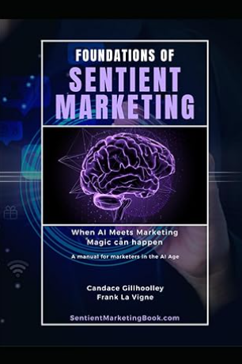
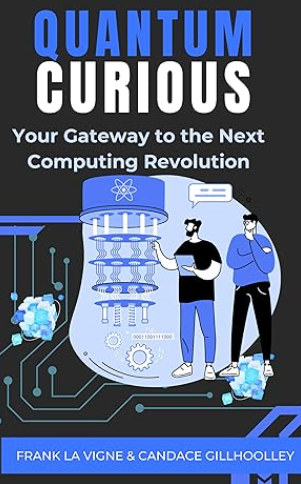
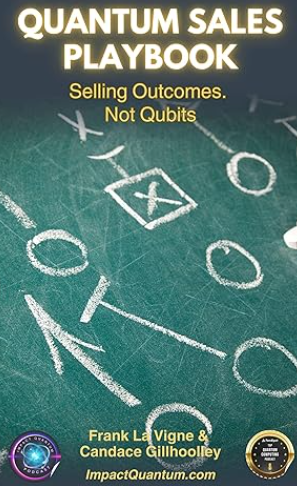

Portfolio
I Turn Emerging Tech Into Clear Market Advantage
Co-host of the Impact Quantum Podcast, host of Women in Quantum, and creator behind the content engine at ImpactQuantum.com translating AI and quantum complexity into actionable insight.
Montreal, Canada | 15+ years in audience, content, and growth marketing | 4 published books | Co-host, Impact Quantum Podcast | Host, Women in Quantum
Credibility
Where Strategy Meets Signal
15+ years in EdTech, publishing, and media—now focused on AI and quantum, building go-to-market narratives and audience engines through LinkedIn, Tech Whispers, and Impact Quantum.
Newsletter Author
4x Published Author
Podcast Co-host & Producer
Quantum Market Analyst
Why I’m Different
I Turn Complex Technology Into Scalable Growth Systems
Most marketers specialize in one area—strategy, content, or distribution. I build and operate the full system end-to-end: transforming complex ideas into clear narratives, credible positioning, and sustained audience growth.
- Translate deep-tech into business value → making AI and quantum accessible to buyers, partners, and stakeholders
- Bridge strategy and execution → from narrative development to hands-on campaign and content delivery
- Build content engines, not one-off assets → podcasts, newsletters, and multi-channel distribution systems
- Drive consistency at scale → creating, scheduling, and distributing content that compounds audience and engagement over time
Career Highlights
Year-by-Year Momentum
A quick timeline of growth across media, community, and revenue-focused marketing leadership.
Flagship Platform
Quantum Global Report: Turning Fragmented Signals into Decision-Ready Insight
I designed and built an interactive platform that translates complex, global quantum market data into clear, actionable intelligence for operators, investors, and ecosystem leaders.
- Clarity at scale → Multi-country quantum data visualized through an intuitive globe and structured comparison views
- Decision-focused design → Filters for readiness, funding, and region surface strategic opportunities and market gaps
- Credibility through synthesis → Combines research, narrative, and product thinking into a single, trusted asset
Interactive Explorer
Explore My Work by Format
Filter by format and open details only when you want them.
Last Stop Duisburg
A family story shaped by history, resilience, and remembrance.
View details
This title demonstrates narrative depth and long-form writing range beyond technical content.

Foundations of Sentient Marketing
A framework for intelligent, human-centered marketing engagement.
View details
Shows strategic positioning expertise and applied go-to-market thinking.

Quantum Curious
An accessible guide to understanding quantum computing and why it matters now.
View details
Built for broad audiences who need practical clarity on the next computing revolution.

The Quantum Sales Playbook
A practical framework for selling outcomes in complex, fast-changing markets.
View details
Connects deep-tech value propositions to real business buying decisions and adoption.
When You're the Only Girl in the Room
A perspective on voice, visibility, and leadership in technical spaces.
View details
Highlights thought leadership on inclusion and executive presence in high-stakes environments.
Quantum Leap North: Canada and Quebec at the Forefront of the Future
An analysis of Canada and Quebec's position in the global quantum landscape and what it signals for future competitiveness.
View details
Explores regional quantum competitiveness, ecosystem signals, and strategic positioning in North America.
Quantum Computing's Noise Problem: Is Styrofoam the Solution?
A practical exploration of an unexpected path to reducing quantum noise and improving system stability.
View details
Breaks down an unconventional engineering angle and why it matters for practical quantum performance.
Behind Every Quantum Breakthrough Is an Engineering System No One Talks About
A look at the infrastructure and execution behind visible quantum progress.
View details
Positions you as a systems-level thinker who translates deep tech into practical strategy.

The Advent of Quantum Computing
Practical implications and an accessible frame for quantum-curious audiences.
View details
Demonstrates your ability to guide technical conversations for broader market understanding.

Before Titles and Credentials
Women in Quantum episode focused on identity, voice, and impact.
View details
Shows your range as both technical interviewer and host of values-driven conversations.

Schroedinger's Graduate Student: Quantum AI with Michael Magid
A conversation on quantum AI, emerging research directions, and practical implications for the quantum ecosystem.
View details
Explores graduate-level quantum AI perspectives and what they signal for future technical and commercial progress.

When Energy Costs More Than Speed
A focused discussion on rethinking quantum computing tradeoffs and practical constraints.
View details
Explores why energy and system design can matter as much as raw performance in real-world quantum adoption.

Quantum Sensing Explained: Exploring Quantum's Secrets
A quick primer on quantum sensing and why these ultra-precise measurements matter in real-world applications.
View details
Direct YouTube Shorts link with thumbnail preview for quick viewing.

Quantum Computing: Is It Real? Future Jobs & Trends
A fast look at where quantum computing stands today and what it could mean for future roles and career paths.
View details
Direct YouTube Shorts link with thumbnail preview for quick viewing.

Early Stage Investing: AI vs. Quantum & Getting Your Money Back
Compares early-stage AI and quantum bets with a practical angle on timelines, risk, and return expectations.
View details
Direct YouTube Shorts link with thumbnail preview for quick viewing.

Neutral Atoms: Exploring Quantum Computing With Single Atoms
Introduces neutral-atom quantum computing and explains why single-atom control is a promising approach.
View details
Direct YouTube Shorts link with thumbnail preview for quick viewing.
Professional Experience
Experience Timeline
Open each role to view outcomes and focus areas.
Senior Customer Success & Revenue Growth Lead, Data-Driven Media (2024-Present)
Increased retention by 18% through segmentation and personalized engagement. Led data-driven campaigns tied to revenue outcomes and built interactive experiences to improve product understanding.
Community & Partner Marketing Manager, Kubuntu Focus (2023-2024)
Ran multi-channel growth campaigns across SEO, paid media, and partnerships. Improved inbound traffic and engagement while scaling co-marketing execution in technical B2B audiences.
PR & Community Relations Manager, Linux Foundation (2022-2023)
Drove global community engagement and campaign performance. Built technical messaging frameworks that improved accessibility, adoption, and cross-functional collaboration.
Business Development & Marketing Strategist, Manning Publications (2010-2022)
Built full-funnel programs across content, email, webinars, SEO, and paid channels. Used CRM automation and segmentation to improve conversion and revenue performance.
Proof
Impact Snapshot
Resume and portfolio highlights in one view.
15+ Years
Audience, content, and growth marketing leadership
18% Lift
Customer retention improvement via segmentation strategy
4 Books
Published across history, marketing, and quantum themes
2 Shows
Co-host, Impact Quantum Podcast | Host, Women in Quantum
19,500
LinkedIn network and professional community reach
Capabilities
Core Skills, Tools, and AI Stack
Audience & Lifecycle Growth
Audience growth strategy, lifecycle marketing, retention, segmentation, and personalization.
Content-Led Demand
Thought leadership platforms, ecosystem storytelling, campaign strategy, and cross-channel distribution.
Community & Developer Marketing
Community-led growth, partner collaboration, and technical audience engagement programs.
Operations & Analytics
KPI tracking, marketing operations, automation workflows, and ROI optimization.
GA4
Google Ads
LinkedIn Campaign Manager
Meta Business Suite
Salesforce
HubSpot
Mailchimp
WordPress
Looker Studio
Smartsheet
SharePoint
Adobe Creative Suite
Claude
Google Gemini
Microsoft Copilot
Perplexity
Meta AI
DeepSeek
Duck.ai
Brave Leo
YouChat
Grok
Flowise AI
AutoGen
Midjourney
Stable Diffusion
Poe
Jan.ai
Indus AI
Contact
Let’s Build Something That Stands Out
If you’re hiring, collaborating, or launching a project, I’d love to connect.